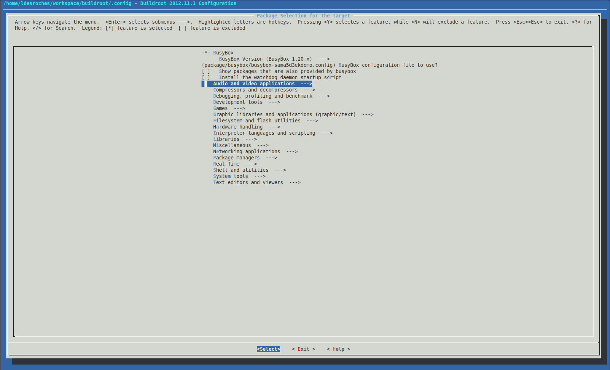
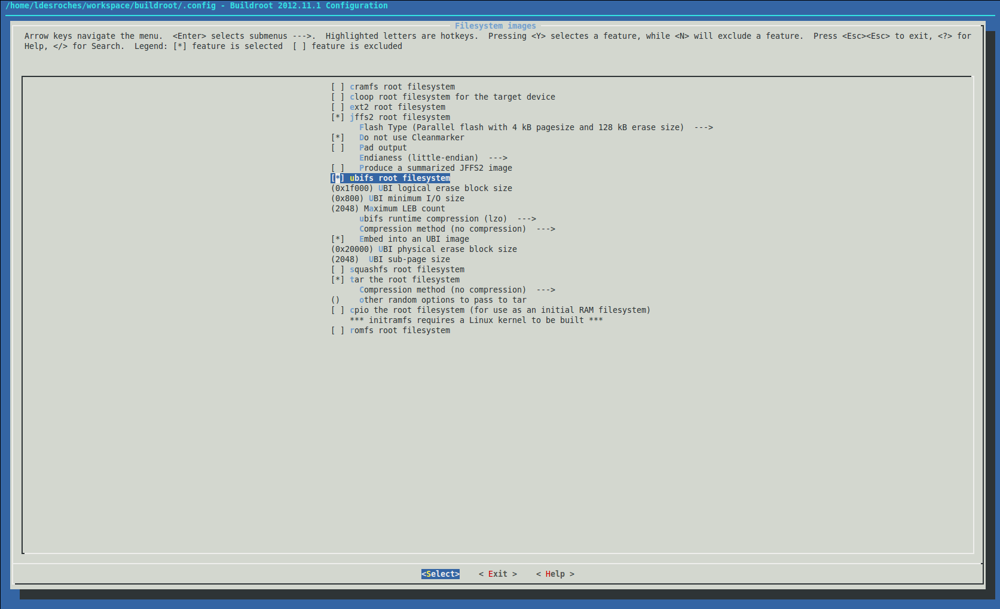

Buildroot
Introduction
Buildroot is a simple, efficient and easy-to-use tool to generate embedded Linux systems through cross-compilation' It uses the Linux Kconfig configuration system, allowing easy selection of system content. The Makefile will include a .config file generated by Kconfig. The content of this file will determine what should be built. It is relatively easy from there to add your own programs so your entire build process is automated. Home website : http://www.buildroot.net/We always build our Buildroot together with a second tree, named buildroot-external-microchip, available on github buildroot-external-microchip repository
While the mainline Buildroot builds correctly, it does not offer the full richness of a linux4sam distribution. For a full linux4sam distribution, we use this External to compliment the mainline Buildroot (or buildroot-at91) with additional features specific for our linux4sam distribution. For our linux4sam distribution , we always use our buildroot-at91 tree together with buildroot-external-microchip, and this is the way we recommend to everyone. In theory , one can try to build our External with the upstream Buildroot repository, but you might miss some fixes which we made on top of upstream buildroot and pushed to our buildroot-at91. Also, in theory, our External can work with different versions of Buildroot upstream. However we do not test nor support this out of the box. Because in upstream buildroot, packages are changed, removed, added from one version to another, you might face build issues that we did not test during our linux4sam releases. To have a smooth experience, you have to checkout our specific tandem tags which we place on each repository in our trees, meaning pick one of our releases, and select on both trees the same tag for a correct build. Currently the Buildroot can build
- at91bootstrap
- u-boot-at91
- linux-at91
- A cross-compiler optimized for your SoC
- Root filesystems of different types
- Bootable SD card
Related Links
How to build Buildroot for AT91
Prerequisites
Host build system should be a Linux system with necessary software$ sudo apt-get install libssl1.0-devor, depending on your host distribution:
$ sudo apt-get install libssl-dev
yum install with Fedora or apt-get install with Ubuntu or Debian. These commands may require root privileges or being in a correct sudoers group.
Get sources
To get the source code, you have to clone the buildroot-at91 and buildroot-external-microchip repositories. buildroot-at91 is a fork of Buildroot with a minimal amount of patches, only the ones which have not hit the mainline yet. The external tree provides stuff which won't hit the mainline: additional defconfigs and packages dedicated to our demos.$ git clone https://github.com/linux4sam/buildroot-at91.git Cloning into 'buildroot-at91'... remote: Counting objects: 271126, done. remote: Compressing objects: 100% (2/2), done. remote: Total 271126 (delta 0), reused 2 (delta 0), pack-reused 271124 Receiving objects: 100% (271126/271126), 61.00 MiB | 2.36 MiB/s, done. Resolving deltas: 100% (186357/186357), done. $ ls buildroot-at91/ arch board boot CHANGES Config.in Config.in.legacy configs COPYING DEVELOPERS docs fs linux Makefile Makefile.legacy package README support system toolchain utils $ git clone https://github.com/linux4sam/buildroot-external-microchip.git Cloning into 'buildroot-external-microchip'... remote: Counting objects: 571, done. remote: Compressing objects: 100% (159/159), done. remote: Total 571 (delta 217), reused 288 (delta 170), pack-reused 225 Receiving objects: 100% (571/571), 94.41 KiB | 76.00 KiB/s, done. Resolving deltas: 100% (332/332), done. $ ls buildroot-external-microchip/ board Config.in configs COPYING docs external.desc external.mk package patches README.md systemThe source code has been taken from the
master branch which is pointing to the latest version of buildroot-at91 and buildroot-external-microchip. We advise you to use linux4sam tags to be sure that there is no mismatch between the versions of these two repositories.
You can list them and use one of them by doing this:
$ cd buildroot-external-microchip/ $ git tag | grep linux4sam linux4sam_5.8 linux4sam_6.0 [...] linux4sam_6.1 linux4sam_6.2 linux4sam-2020.04 linux4sam-2020.10 $ git checkout linux4sam-2020.10 -b buildroot-external-microchip-linux4sam-2020.10 $ cd ../buildroot-at91/ $ git tag | grep linux4sam linux4sam_5.8 linux4sam_5.8-rc1 linux4sam_6.0 linux4sam_6.0-rc1 linux4sam_6.0-rc2 linux4sam_6.0-rc3 linux4sam_6.1 linux4sam_6.1-rc1 linux4sam_6.2 linux4sam-2020.04 linux4sam-2020.10 $ git checkout linux4sam-2020.10 -b buildroot-at91-linux4sam-2020.10
Build the rootfs image
Assuming you are at the Buildroot root directory, you'll find aconfigs folder containing several default configurations. If you are familiar with kernel configuration, you'll see that it works in the same way.
For the same board, several defconfig files are provided inside the buildroot-at91. These defconfigs are from upstream and, as said above, without the richness of a full linux4sam release. They can be used for a minimal test image. -
atmel_[soc]_xplained_defconfigprovides at91bootstrap, u-boot, the kernel image and dtb files, a very basic rootfs for NAND flash memory. -
atmel_[soc]_xplained_mmc_defconfigprovides the same stuff but for SD card. Moreover a SD card image is done to ease the creation of the bootable SD card. -
atmel_[soc]_xplained_dev_defconfigandatmel_[soc]_xplained_mmc_dev_defconfigprovide a rootfs with additional tools to use SoC devices (I2C, CAN, audio, etc.).
configs folder: -
[soc]_[board]_headless_defconfigprovides barely the same stuff asatmel_[soc]_xplained_mmc_dev_defconfigplus AWS greengrass or other command-line tools, but with no graphics related packages. -
[soc]_[board]_graphics_defconfigprovides the same stuff plus a full graphics (EGT) demo.
$ make atmel_sama5d2_xplained_mmc_defconfig
$ BR2_EXTERNAL=../buildroot-external-microchip/ make sama5d2_xplained_graphics_defconfigThen you can build the rootfs:
$ makeOnce compilation is done, have a look to
output/images to see what has been generated:
$ ls output/images/ at91bootstrap.bin rootfs.ext2 sama5d2_xplained_isc.dtbo sama5d2_xplained_pda4.dtbo sama5d2_xplained_qspi.dtbo zImage at91-sama5d2_xplained.dtb rootfs.ext4 sama5d2_xplained.itb sama5d2_xplained_pda5.dtbo sama5d2_xplained-sdcardboot-uboot-3.9.0.bin boot.bin rootfs.tar sama5d2_xplained_ov7670.dtbo sama5d2_xplained_pda7b.dtbo sdcard.img boot.vfat sama5d2_xplained_i2s0_proto.dtbo sama5d2_xplained_ov7740.dtbo sama5d2_xplained_pda7.dtbo u-boot.binYou can have a look at the Create a SD card with the demo page to create an SD card from the
sdcard.img file. If you want to flash NAND or whatever memory you want with Sam-Ba, please go to the Using SAM-BA to flash components to board section of your board.
Cross toolchain
While creating the rootfs, Buildroot will build a cross toolchain (or will download or use one present on your machine). You can find it underoutput/host/usr:
$ ls output/host/usr/bin 2to3 arm-linux-gcc-ranlib fdtoverlay libpng-config python3.7m-config 2to3-3.7 arm-linux-gcov fdtput libtool python3-config aclocal arm-linux-gcov-dump fincore libtoolize python-config aclocal-1.15 arm-linux-gcov-tool findmnt linux32 python-freeze-importlib arm-buildroot-linux-gnueabihf-addr2line arm-linux-gdb fixqt4headers.pl linux64 pyvenv arm-buildroot-linux-gnueabihf-ar arm-linux-gprof flex linux-dtc qdbuscpp2xml arm-buildroot-linux-gnueabihf-as arm-linux-ld flex++ logger qdbusxml2cpp arm-buildroot-linux-gnueabihf-c++ arm-linux-ld.bfd flock look qlalr arm-buildroot-linux-gnueabihf-c++.br_real arm-linux-nm gapplication lrelease qmake arm-buildroot-linux-gnueabihf-cc arm-linux-objcopy gawk lsattr qmlcachegen arm-buildroot-linux-gnueabihf-cc.br_real arm-linux-objdump gdbus lsblk qmlimportscanner arm-buildroot-linux-gnueabihf-c++filt arm-linux-ranlib gdbus-codegen lscpu qmllint arm-buildroot-linux-gnueabihf-cpp arm-linux-readelf gdk-pixbuf-csource lsipc qmlmin arm-buildroot-linux-gnueabihf-cpp.br_real arm-linux-size gdk-pixbuf-pixdata lslocks qt.conf arm-buildroot-linux-gnueabihf-elfedit arm-linux-strings gdk-pixbuf-query-loaders lsmem qvkgen arm-buildroot-linux-gnueabihf-g++ arm-linux-strip gdk-pixbuf-thumbnailer lsns rake arm-buildroot-linux-gnueabihf-g++.br_real attr gem lupdate rcc arm-buildroot-linux-gnueabihf-gcc autoconf genbrk lzip rdjpgcom arm-buildroot-linux-gnueabihf-gcc-7.4.0 autoheader gencfu m4 rdoc arm-buildroot-linux-gnueabihf-gcc-7.4.0.br_real autom4te gencnval makeconv rename arm-buildroot-linux-gnueabihf-gcc-ar automake gendict makedevs renice arm-buildroot-linux-gnueabihf-gcc.br_real automake-1.15 genimage mcookie reset arm-buildroot-linux-gnueabihf-gcc-nm autopoint genrb meson rev arm-buildroot-linux-gnueabihf-gcc-ranlib autoreconf getfacl mk_cmds ri arm-buildroot-linux-gnueabihf-gcov autoscan getfattr mkenvimage ruby arm-buildroot-linux-gnueabihf-gcov-dump autoupdate getopt mkimage script arm-buildroot-linux-gnueabihf-gcov-tool bison gettextize mkpasswd scriptreplay arm-buildroot-linux-gnueabihf-gdb cal gio moc setarch arm-buildroot-linux-gnueabihf-gprof captoinfo gio-querymodules mount setfacl arm-buildroot-linux-gnueabihf-ld chacl glib-compile-resources mountpoint setfattr arm-buildroot-linux-gnueabihf-ld.bfd chattr glib-compile-schemas msgfmt setsid arm-buildroot-linux-gnueabihf-nm choom glib-genmarshal msgmerge sip arm-buildroot-linux-gnueabihf-objcopy cjpeg glib-gettextize namei smtpd.py arm-buildroot-linux-gnueabihf-objdump clear glib-mkenums ncurses6-config smtpd.py.7 arm-buildroot-linux-gnueabihf-ranlib cmake gobject-query ninja swig arm-buildroot-linux-gnueabihf-readelf col gperf node swig3.0 arm-buildroot-linux-gnueabihf-run colcrt gresource npm syncqt.pl arm-buildroot-linux-gnueabihf-size colrm gsettings npx tabs arm-buildroot-linux-gnueabihf-strings column gtester openssl tic arm-buildroot-linux-gnueabihf-strip compile_et gtester-report patchelf toe arm-linux-addr2line convert-dtsv0 hexdump pcre-config toolchain-wrapper arm-linux-ar cpack i386 pcregrep torque arm-linux-as c_rehash icu-config pcretest tput arm-linux-c++ ctest icuinfo pkgconf tset arm-linux-c++.br_real djpeg ifnames pkg-config uic arm-linux-cc dmesg infocmp pkgdata umount arm-linux-cc.br_real dtc infotocap prlimit uname26 arm-linux-c++filt dtdiff ipcmk pydoc utmpdump arm-linux-cpp dumpimage ipcrm pydoc3 uuidgen arm-linux-cpp.br_real easy_install ipcs pydoc3.7 uuidparse arm-linux-elfedit easy_install-2.7 irb python whereis arm-linux-g++ easy_install-3.7 isosize python2 wrjpgcom arm-linux-g++.br_real eject jpegtran python2.7 x86_64 arm-linux-gcc erb kill python2.7-config xgettext arm-linux-gcc-7.4.0 faked kmod python2-config xmlwf arm-linux-gcc-7.4.0.br_real fakeroot last python3 yacc arm-linux-gcc-ar fallocate lastb python3.7 arm-linux-gcc.br_real fdtdump lconvert python3.7-config arm-linux-gcc-nm fdtget libpng16-config python3.7m
make clean, you will delete the rootfs but also the cross toolchain. You can save the cross toolchain in another place. Moreover you can tell Buildroot to use it to save time for next compilations. To do it run make menuconfig then go to the Toolchain menu. Then select External toolchain as Toolchain type, Custom toolchain as Toolchain, Pre-installed toolchain as Toolchain origin. Finally set Toolchain path and Toolchain prefix.
Customizing Buildroot
Before building the rootfs image, you may want to customize it: adding/removing packages, modifying component configurations such as busybox and uclibc, generate the kernel, etc.Customizing Busybox / Linux / U-boot / uClibc configuration
All the explanations are available in the Buildroot manual Configuration of other componentsAdding/removing packages from the rootfs
You can easily add or remove packages from the rootfs. You simply have to do:BR2_EXTERNAL=../buildroot-external-microchip/ make menuconfigand to go to the
Package Selection for the target menu. Packages are sorted by categories:

You simply have to go in the desired category and to select or deselect the packages you want. Once done, you can build your rootfs.
{kind=link}
make clean and to rebuild the whole rootfs to be sure that the packages will be removed.
Updating the rootfs for another nand flash device
The rootfs are configured to run on the nand flash device present on atmel boards. If you use another one you may have to update some parameters. To do it, runmake menuconfig and go to Filesystem images:

For a jffs2 root filesystem, you may have to update the page and erase size from {kind=link}
Flash Type.
For a ubifs root filesystem, you may have to update the UBI logical erase block size, the UBI minimum I/O size, the Maximum LEB count, the UBI physical erase block size and the UBI sub-page size. You can find more information about these parameters in the ubi documentationAdd your own software to Buildroot
Builroot is basically a big set of makefiles so you will have to follow some steps to insert your own application to the cross-building system. You should have a look at the official documentationRecent FAQ
- BuildRoot
-
• Audio FAQ: Audio with ALSA. ()
• Sam 9 x 60 Ek Attaching Tm 5000 Display: Addition to the other generic FAQ about LCD displays: ConnectModuleFromPDA. (Sam9x60EK)